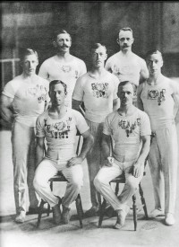

Bernhard Marius Petersen
M, #97704, f. 3 august 1873
Foreldre

Petersen - turnbrødre
Biografi
Bernhard Marius Petersen ble født den 3 august 1873 på/i Øvre Bakklandet, Trondheim, Sør-Trøndelag.
Bernhard Marius Petersen ble døpt den 7 september 1873 på/i Bakklandet, Trondheim, Sør-Trøndelag. Han ble konfirmert den 8 april 1888 på/i Vår Frue kirke, Trondheim, Sør-Trøndelag. Bernhard var turner sammen med sine seks brødre. De representerte Trondhjems Turnforening.
Han deltok i 2. nasjonale stevne i Bergen i 1890 og i et internasjonalt stevne i Stockholm i 1891.
| Sist redigert |
19 august 2024 11:07:18 |
Fredrikke Karoline Petersen
K, #97705, f. 4 januar 1875, d. august 1951
Foreldre
Biografi
Fredrikke Karoline Petersen ble født den 4 januar 1875 på/i Trondheim, Sør-Trøndelag. Hun giftet seg med
Peter Jensen Tøndel den 9 mars 1902 på/i Vår Frue kirke, Trondheim, Sør-Trøndelag. Hun døde i august 1951 på/i Trondheim, Sør-Trøndelag.
Fredrikke Karoline Petersen was also known as Fredrikke Karoline Tøndel. Hun ble døpt den 7 februar 1875 på/i Bakklandet, Trondheim, Sør-Trøndelag. Hun ble konfirmert den 6 oktober 1889 på/i Nidarosdomen, Trondheim, Sør-Trøndelag.
| Sist redigert |
12 juli 2024 13:09:01 |
Otto Petersen
M, #97706, f. 25 juni 1879, d. 1948
Foreldre
Biografi
Otto Petersen ble født den 25 juni 1879 på/i Trondheim, Sør-Trøndelag. Han giftet seg med
Laura Ingebjørg Anna Solem den 3 november 1902 på/i Nidarosdomen, Trondheim, Sør-Trøndelag. Han giftet seg med
Josefine Emilie Andersen den 6 desember 1916 på/i Nidarosdomen, Trondheim, Sør-Trøndelag. Han døde i 1948. Han ble gravlagt den 30 april 1948 på/i Lademoen kirkegård, Trondheim, Sør-Trøndelag.
Otto Petersen was also known as Otto Pettersen. Han ble døpt den 27 juli 1879 på/i Vår Frue kirke, Trondheim, Sør-Trøndelag. Han ble konfirmert den 1 april 1894 på/i Nidarosdomen, Trondheim, Sør-Trøndelag. Otto var turner sammen med sine seks brødre. De representerte Trondhjems Turnforening. Otto deltok sammen med Rasmus i 6. Nasjonale stemne og de ble hhv. nr. 5 og 2.
| Sist redigert |
19 august 2024 11:07:50 |
Fredrik Carl Petersen
M, #97707, f. 8 februar 1881, d. 8 oktober 1955
Foreldre
Biografi
Fredrik Carl Petersen ble født den 8 februar 1881 på/i Trondheim, Sør-Trøndelag. Han døde den 8 oktober 1955.
Fredrik var turner sammen med sine seks brødre. De representerte Trondhjems Turnforening.
| Sist redigert |
19 august 2024 11:08:08 |
Thora Lorentze Petersen
K, #97708, f. 12 oktober 1882, d. 24 oktober 1960
Foreldre
Biografi
Thora Lorentze Petersen ble født den 12 oktober 1882 på/i Trondheim, Sør-Trøndelag. Hun døde den 24 oktober 1960.
Thora Lorentze Petersen was also known as Thora Lorentze Gimnes. Hun ble døpt den 26 desember 1882 på/i Nidarosdomen, Trondheim, Sør-Trøndelag.
| Sist redigert |
11 juli 2024 22:31:10 |
Thorleif Petersen
M, #97709, f. 6 juli 1884, d. 22 desember 1958
Foreldre
Biografi
Thorleif Petersen ble født den 6 juli 1884 på/i Trondheim, Sør-Trøndelag. Han giftet seg med
Conradine Ulrikke Hass Nordhus den 21 april 1907 på/i Bakklandet, Trondheim, Sør-Trøndelag. Han døde den 22 desember 1958 på/i Trondheim, Sør-Trøndelag.
Thorleif Petersen ble døpt hjemme den 6 juli 1884. Han ble døpt den 31 august 1884 på/i Nidarosdomen, Trondheim, Sør-Trøndelag. Han ble konfirmert den 22 april 1900 på/i Nidarosdomen, Trondheim, Sør-Trøndelag. Thorleif var turner og representerte Trondhjems Turnforening. I 1906 deltok han i de Olympiske leker i Athen sammen med sin bror Rasmus. Thorleif var der med på det laget som vant Norges første OL-gull gjennom historien. Det ble først arrangert en kvalifiseringskonkurranse i Oslo, der 21 av de 30 deltakerne kvalifiserte seg til å delta i olympiaden.
Ved det niende nasjonale stevnet i turn som ble arrangert i 1918 vant han gull i «enmannsturn». Det første offisielle NM ble imidlertid ikke arrangert før i 1920.
Thorleif fikk foreningens gullmedalje i 1909.
| Sist redigert |
19 august 2024 11:08:43 |
Anne Elisabeth Petersen
K, #97710, f. 20 mai 1886, d. 8 desember 1982
Foreldre
Biografi
Anne Elisabeth Petersen ble født den 20 mai 1886 på/i Trondheim, Sør-Trøndelag. Hun døde den 8 desember 1982 på/i Porsgrunn, Telemark. Hun ble gravlagt den 15 desember 1982 på/i Eidanger nye kirkegård, Porsgrunn, Telemark.
Anne Elisabeth Petersen was also known as Anna Elisabeth Ekstrøm. Hun ble døpt den 15 august 1886 på/i Nidarosdomen, Trondheim, Sør-Trøndelag.
| Sist redigert |
12 juli 2024 14:47:05 |
Sverre Petersen
M, #97711, f. 12 november 1887
Foreldre
Biografi
Sverre Petersen ble født den 12 november 1887 på/i Trondheim, Sør-Trøndelag. Han giftet seg med
Oline Antonsen den 20 februar 1910 på/i Lademoen kirke, Trondheim, Sør-Trøndelag.
Sverre Petersen ble døpt den 26 desember 1887 på/i Nidarosdomen, Trondheim, Sør-Trøndelag. Sverre var turner sammen med sine seks brødre. De representerte Trondhjems Turnforening. Sverre fikk foreningens gullmedalje i 1913. Han var dessuten ivrig skiløper. Han deltok i flere skirenn som kombinertløper, også i Holmenkollen med mange bra plasseringer. Sverre vant også Damenes pokal. Han bodde i 1910 på/i Steinkjer, Nord-Trøndelag.
| Sist redigert |
19 august 2024 11:09:07 |
Trygve Petersen
M, #97712, f. 6 januar 1890, d. 1 april 1979
Foreldre
Biografi
Trygve Petersen ble født den 6 januar 1890 på/i Trondheim, Sør-Trøndelag. Han giftet seg med
Maria Elisabeth Bjørkmann den 24 august 1913 på/i Lademoen kirke, Trondheim, Sør-Trøndelag. Han døde den 1 april 1979 på/i Rjukan, Tinn, Telemark. Han ble gravlagt på/i Rjukan kirkegård, Tinn, Telemark.
Trygve Petersen ble døpt den 31 august 1890 på/i Nidarosdomen, Trondheim, Sør-Trøndelag. Trygve var yngst av de syv velkjente idrettsbrødrene fra Trondheim. Han beholdt interessen for turnsport hele livet. Trygve var en sprek turner til langt opp i alderdommen, og en velkjent veteranturner med deltakelse i utallige Landsturnstevner. Han ble bisatt den 5 april 1979.
| Sist redigert |
19 august 2024 11:09:28 |
Christian Petersen
M, #97714, f. 17 september 1876, d. 7 januar 1877
Foreldre
Biografi
Christian Petersen ble født den 17 september 1876 på/i Trondheim, Sør-Trøndelag. Han døde den 7 januar 1877 på/i Trondheim, Sør-Trøndelag. Han ble gravlagt den 13 januar 1877 på/i Trondheim, Sør-Trøndelag.
Christian Petersen ble døpt den 22 september 1876 på/i Nidarosdomen, Trondheim, Sør-Trøndelag.
| Sist redigert |
12 juli 2024 13:13:53 |
Johan Marius Gimnes
M, #97715, f. 23 mai 1877
Biografi
Johan Marius Gimnes ble født den 23 mai 1877.
| Sist redigert |
11 juli 2024 18:05:37 |
Conradine Ulrikke Hass Nordhus
K, #97716, f. 22 desember 1887, d. 4 november 1955
Biografi
Conradine Ulrikke Hass Nordhus ble født den 22 desember 1887 på/i Trondheim, Sør-Trøndelag. Hun giftet seg med
Thorleif Petersen den 21 april 1907 på/i Bakklandet, Trondheim, Sør-Trøndelag. Hun døde den 4 november 1955 på/i Trondheim, Sør-Trøndelag. Hun ble gravlagt den 11 november 1955 på/i Lademoen kirkegård, Trondheim, Sør-Trøndelag.
Conradine Ulrikke Hass Nordhus ble døpt den 17 desember 1888 på/i Nidarosdomen, Trondheim, Sør-Trøndelag.
| Sist redigert |
12 juli 2024 13:47:37 |
Josefine Emilie Andersen
K, #97717, f. 10 april 1883, d. 1964
Biografi
Josefine Emilie Andersen ble født den 10 april 1883 på/i Karlsøy, Troms. Hun giftet seg med
Otto Petersen den 6 desember 1916 på/i Nidarosdomen, Trondheim, Sør-Trøndelag. Hun døde i 1964 på/i Trondheim, Sør-Trøndelag. Hun ble gravlagt den 4 august 1964 på/i Lademoen kirkegård, Trondheim, Sør-Trøndelag.
Josefine Emilie Andersen was also known as Josefine Pettersen.
| Sist redigert |
14 juli 2024 15:27:17 |
Oline Antonsen
K, #97718, f. 18 desember 1887
Biografi
Oline Antonsen ble født den 18 desember 1887 på/i Hemne, Sør-Trøndelag. Hun giftet seg med
Sverre Petersen den 20 februar 1910 på/i Lademoen kirke, Trondheim, Sør-Trøndelag.
Oline Antonsen was also known as Oline Petersen.
| Sist redigert |
12 juli 2024 14:00:17 |
Maria Elisabeth Bjørkmann
K, #97719, f. 1892
Biografi
Maria Elisabeth Bjørkmann ble født i 1892 på/i Steinkjer, Nord-Trøndelag. Hun giftet seg med
Trygve Petersen den 24 august 1913 på/i Lademoen kirke, Trondheim, Sør-Trøndelag.
Maria Elisabeth Bjørkmann was also known as Maria Elisabeth Petersen.
| Sist redigert |
12 juli 2024 10:11:52 |
Peder Rasmussen Flatås
M, #97720, f. 13 mai 1905, d. 8 oktober 1989
Biografi
Peder Rasmussen Flatås ble født den 13 mai 1905 på/i Leinstrand, Trondheim, Sør-Trøndelag. Han giftet seg med
Astrid Petersen den 24 januar 1931 på/i Ilen kirke, Trondheim, Sør-Trøndelag. Han døde den 8 oktober 1989 på/i Trondheim, Sør-Trøndelag. Han ble gravlagt den 30 oktober 1989 på/i Heimdal kirkegård, Trondheim, Sør-Trøndelag.
| Sist redigert |
11 juli 2024 23:33:29 |
Ragnhild Ingfrida Petersen
K, #97721, f. 14 september 1903, d. 4 september 1989
Foreldre
Biografi
Ragnhild Ingfrida Petersen ble født den 14 september 1903 på/i Trondheim, Sør-Trøndelag. Hun døde den 4 september 1989 på/i Trondheim, Sør-Trøndelag. Hun ble gravlagt den 25 september 1989 på/i Stavne kirkegård, Trondheim, Sør-Trøndelag.
Ragnhild Ingfrida Petersen was also known as Ragnhild Ingfrid Solberg.
| Sist redigert |
11 juli 2024 23:49:16 |
Peter Jensen Tøndel
M, #97722, f. 24 juli 1867, d. 20 april 1942
Biografi
Peter Jensen Tøndel ble født den 24 juli 1867 på/i Rissa, Sør-Trøndelag. Han giftet seg med
Fredrikke Karoline Petersen den 9 mars 1902 på/i Vår Frue kirke, Trondheim, Sør-Trøndelag. Han døde den 20 april 1942 på/i Trondheim, Sør-Trøndelag.
| Sist redigert |
12 juli 2024 00:21:59 |
Laura Ingebjørg Anna Solem
K, #97723, f. 1872, d. 13 oktober 1914
Biografi
Laura Ingebjørg Anna Solem ble født i 1872 på/i Strinda, Sør-Trøndelag. Hun giftet seg med
Otto Petersen den 3 november 1902 på/i Nidarosdomen, Trondheim, Sør-Trøndelag. Hun døde av tuberkulose den 13 oktober 1914 på/i Trondheim, Sør-Trøndelag. Hun ble gravlagt den 17 oktober 1914 på/i Trondheim, Sør-Trøndelag.
Laura Ingebjørg Anna Solem ble konfirmert den 10 oktober 1886 på/i Strinda, Sør-Trøndelag.
| Sist redigert |
12 juli 2024 14:26:09 |
{kind=link}